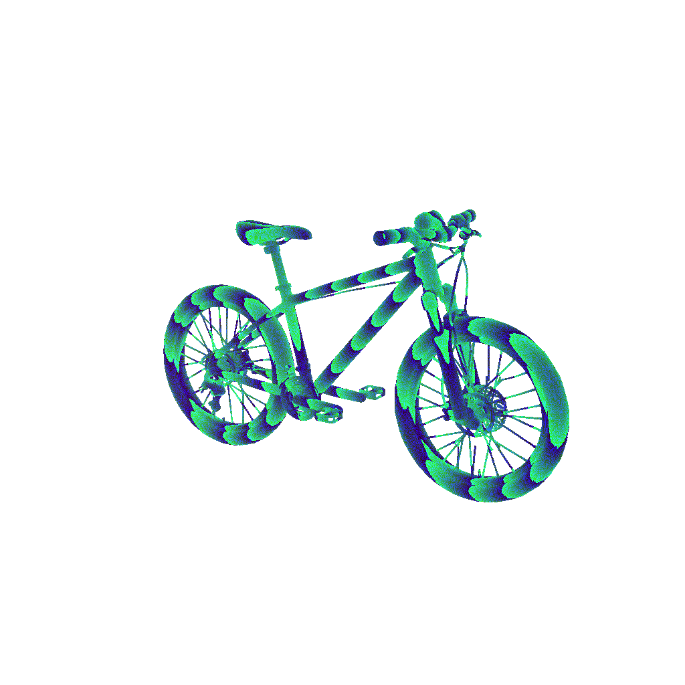
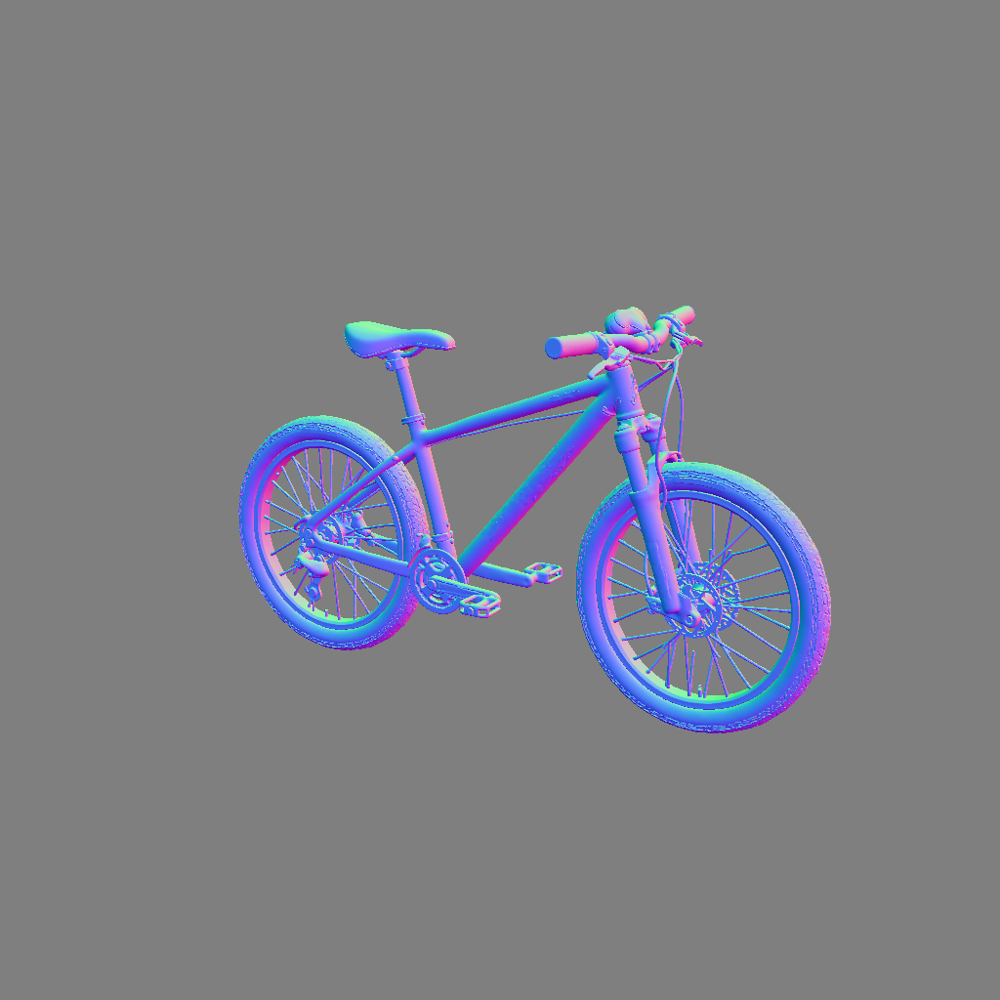

投影运行时深度／法线 · A/B/C
Edge 全屏 · Bicycle 185 万面 / 重叠压力组 1114 万面 · 单位 ms
| 场景 | A 分块 | B 整张＋等待 | C 去掉帧等待 | B 减少 |
|---|
| Bicycle / 512² / 仅深度 | 72.4 | 24.4 | 23.4 | −66.3% |
| Bicycle / 1024² / 仅深度 | 321.5 | 71.6 | 69.9 | −77.7% |
| Bicycle / 1024² / 深度＋法线 | 653.0 | 150.6 | 133.7 | −76.9% |
| Bicycle / 2048² / 深度＋法线 | 2623.7 | 518.5 | 503.9 | −80.2% |
| 6 份重叠模型 / 1024² / 双图 | 653.8 | 155.7 | 143.4 | −76.2% |
采用 B；C 的 2K 双图额外收益仅 2.8%，保留 pass 间呈现与交互门禁。

A · RGB packed depth B · RGB packed depth
B · RGB packed depth
A · 几何法线 B · 几何法线
B · 几何法线72 次采集的深度／法线 RGBA 差异均为 0；原始 PNG 哈希配对相同。
压力补测最大帧间隔 A/B：16.8 / 16.9ms。B 部分输入派发 P95 升至约 17ms；样本不等长，不宣称零交互代价。数据为实际捕获函数，不含远端推理或缓存命中。
完整说明 · 主实验 · 压力补测